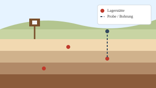

Föderierte Recherche
Durchsuche Montanreviere, Lagerstätten und Fundlandschaften über eine gemeinsame Karten- und Suchoberfläche.
Mehr zu Daten & SucheGeoHist unterstützt die Fachcommunity dabei, Daten zur prähistorischen, antiken, vormodernen und industriellen Rohstoffnutzung zentral zu recherchieren, räumlich zu analysieren und FAIR zu publizieren.

Durchsuche Montanreviere, Lagerstätten und Fundlandschaften über eine gemeinsame Karten- und Suchoberfläche.
Mehr zu Daten & SucheNutze Diagramme, Vergleichsplots und Wissensgraphen, um komplexe Forschungszusammenhänge sichtbar zu machen.
Mehr zu Funktionen & FeaturesPubliziere Forschungsdaten mit DOI, nach FAIR-Prinzipien und nutze ein Review-System zur Qualitätssicherung.
Mehr zum Publizieren